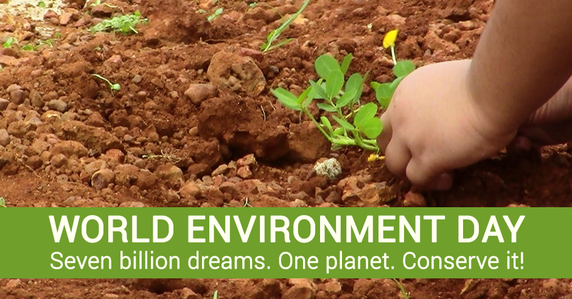

Themes

Stage in front of the Brandenburg Gate on Environmental Festival 2011
World Environment Day 2011 in Donetsk, Ukraine
US Consul CG Yee, along with the Mayor of Thessaloniki Vassilis Papageorgopoulos, the Prefect of Thessaloniki Panagiotis Psomiadis, and many others participating in World Environment Day on the waterfront, Bike Path
Trees planting during the World Environment Day 2012 in Konso - Ethiopia.
The 2013 theme for World Environment Day was Think.Eat.Save.
The campaign addressed the huge annual wastage and losses in food, which, if conserved, would release a large quantity of food as well as reduce the overall carbon footprint. The campaign aimed to bring about awareness in countries with lifestyles resulting in food wastage.